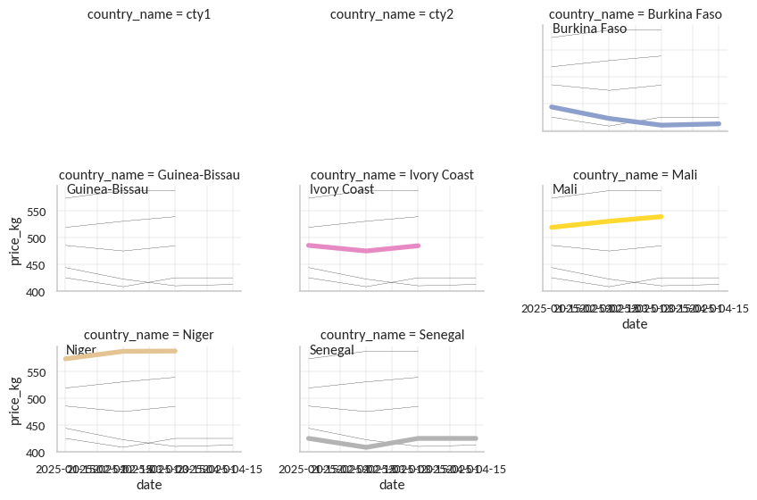

This time, I’ll plot the World Food Programme Prices data. First, we get data from the ’‘’Global WFP Food Prices’’ dataset from the HDX API. and remove the first row which contains tags.
Code
from hdx.utilities.easy_logging import setup_loggingfrom hdx.api.configuration import Configurationfrom hdx.data.dataset import Datasetimport pandas as pd
/home/gnoblet/Documents/GitHub/30DayChartChallenge/.venv/lib/python3.13/site-packages/quantulum3/classifier.py:28: UserWarning: Classifier dependencies not installed. Run pip install quantulum3[classifier] to install them. The classifer helps to dissambiguate units.
warnings.warn(
Code
# setupsetup_logging()Configuration.create( hdx_site ="prod", user_agent="@gnoblet_30DayChartChallenge", hdx_read_only =True)dataset = Dataset.read_from_hdx("global-wfp-food-prices")url = dataset.get_resource()['url']# get csv from urldf = pd.read_csv(url, dtype =str)# remove first rowdf = df.iloc[1:]
2025-05-27 13:12:26.626 | INFO | hdx.api.configuration:__init__:96 - No HDX base configuration parameter. Using default base configuration file: /home/gnoblet/Documents/GitHub/30DayChartChallenge/.venv/lib/python3.13/site-packages/hdx/api/hdx_base_configuration.yaml.
2025-05-27 13:12:26.627 | INFO | hdx.api.configuration:__init__:99 - Loading HDX base configuration from: /home/gnoblet/Documents/GitHub/30DayChartChallenge/.venv/lib/python3.13/site-packages/hdx/api/hdx_base_configuration.yaml
2025-05-27 13:12:26.635 | INFO | hdx.api.configuration:__init__:132 - No HDX configuration parameter. Using default configuration file: /home/gnoblet/.hdx_configuration.yaml.
2025-05-27 13:12:26.636 | INFO | hdx.api.configuration:__init__:142 - Loading HDX configuration from: /home/gnoblet/.hdx_configuration.yaml
2025-05-27 13:12:26.637 | INFO | hdx.api.configuration:__init__:230 - Read only access to HDX: True
Let’s keep only Sub-Saharan countries in the West African region (using XOF, recorded as such in the dataset). Let’s also focus on the local prices for rice.
Code
# keep only Sub-Saharan countries curreency being set to XOFdf = df[df['currency'] =='XOF']# keep only local prices for ricedf = df[df['commodity_id'] =='71']
There is some needed data wrangling now since there are different units, and in particular where the unit is 1KG, only KG is written in column ‘unit’.
Code
# split at the first spacesplits = df['unit'].str.split(' ', n =1, expand=True)# If the first part is not numeric, move it to the second part and set the first to '0'mask_text_only =~splits[0].str.isnumeric()splits.loc[mask_text_only, 1] = splits.loc[mask_text_only, 0]splits.loc[mask_text_only, 0] ='1'# Fill NaN in the second part with None or ''splits[1] = splits[1].fillna('')# Assign columnsdf['div'] = splits[0].astype(int)df['unit_only'] = splits[1]# price as doubledf['price'] = df['price'].astype(float)# case_when # if unit_only is KG, divide price by div# if unit_only is marmite, divide price by 2.5 (FAO: marmite is 2.5kg, seems to be in Haiti only, can be removed eventually since HTI is not XOF)df['price_kg'] = df.apply(lambda x: x['price'] / x['div'] if x['unit_only'] =='KG'else x['price'] /2.5, axis=1)
Now, before I move on to plot, I want to get the median price by country and date, and get neat country names. For this, I need to convert the date column to datetime, summarize and get unique median price by countryiso3 and date, and add country names from a wonderful iso dictionary.
Code
df['date'] = pd.to_datetime(df['date'])df = df.sort_values('date')# summarize and get unique median price by countryiso3 and datedf = df.groupby(['countryiso3', 'date'])['price_kg'].median().reset_index()
Code
# add country names from iso dictionaryiso = {'BEN': 'Benin','BFA': 'Burkina Faso','CIV': 'Ivory Coast','GNB': 'Guinea-Bissau','MLI': 'Mali','NER': 'Niger','SEN': 'Senegal'}df['country_name'] = df['countryiso3'].map(iso)
On to the plot! Using seaborn now we will plot time series of prices using small multiples by country. Let’s load the packages needed and set up the theme.
Code
import seaborn as snsimport matplotlib.dates as mdatesimport textwrapimport matplotlib.pyplot as plt# set up a themesns.set_theme( style ='whitegrid', font ='Carlito', rc = {"grid.linewidth": 0.3})
There are only seven countries in this dataset. I add dummy rows to be able to plot empty countries first that will leave space for the plot title on the basis of a 3-column row. There may very well be more elegant solutions but I couldn’t find any.
The plot follows this structure: - use sns.relplot to plot each year’s time series in its own facet; - loop through each facet to add all countries except the dummy ones.
Code
# add dummy rows to plot emoty countries firstdummy_rows = pd.DataFrame({'date': [df['date'].min(), df['date'].min()],'price_kg': [None, None],'country_name': ['cty1', 'cty2']})df2 = pd.concat([dummy_rows, df], ignore_index=True)# plot each year's time series in its own facetg = sns.relplot( data = df2, x ="date", y ="price_kg", col ="country_name", hue ="country_name", kind ="line", palette ="Set2", linewidth =4, zorder =5, col_wrap =3, height =2, aspect =1.5, legend =False, col_order = ['cty1', 'cty2'] +sorted(df['country_name'].unique()))# loop through each facetfor country_name, ax in g.axes_dict.items():if country_name in ['cty1', 'cty2']:# Hide axes for dummy facets ax.axis('off')else:# Your normal plotting code ax.text(.05, .93, country_name, transform = ax.transAxes) sns.lineplot( data = df2[df2['country_name'] != country_name], x ="date", y ="price_kg", units ="country_name", estimator =None, color ="black", linewidth =0.2, ax = ax )
/tmp/ipykernel_255860/3570561818.py:7: FutureWarning: The behavior of DataFrame concatenation with empty or all-NA entries is deprecated. In a future version, this will no longer exclude empty or all-NA columns when determining the result dtypes. To retain the old behavior, exclude the relevant entries before the concat operation.
df2 = pd.concat([dummy_rows, df], ignore_index=True)

Now that I got the base plot, I can add some nice touches. First, I want to set the x-axis to show only years, remove titles and set the y-axis label to XOF.
Code
# format x-axis to show only yearsfor ax in g.axes.flatten(): ax.xaxis.set_major_locator(mdates.YearLocator()) ax.xaxis.set_major_formatter(mdates.DateFormatter('%Y'))for label in ax.get_xticklabels(): label.set_rotation(0) label.set_horizontalalignment('center')# Enable grid only for major ticks (years) ax.grid(which='major', axis='x', linestyle='-', linewidth=0.2)# tweak the supporting aspects of the plotg.set_titles("")g.set_axis_labels("", "XOF")
Second, it’s time to set titles, caption, etc.
Code
# some layout style aka titles and captionpalette = sns.color_palette("Set2")title_color = palette[0]title ="How smooth are changes in local rice prices in Western Sub-Saharan Africa?"subtitle ="The graph displays median prices of local rice for 7 sub-sahar an countries from 2022 to today, where XOF is the main currency---coded as such in the dataset. The associated Quarto document emphasizes both how to download data from the HDX API and the use of small multiples to show the evolution of prices over time across countries."caption ="Data: HDX - WFP Food Prices | Viz: @gnoblet"# wrap characters and then add texttitle_w ="\n".join(textwrap.wrap(title, width =50))subtitle_w ="\n".join(textwrap.wrap(subtitle, width =70))plt.figtext(0.05, 0.9, title_w, fontsize =23, color = title_color, wrap =True)plt.figtext(0.05, 0.75, subtitle_w, fontsize =16, color ='black', wrap =True)plt.figtext(0.05, 0.70, caption, fontsize =12, color ='black', wrap =True)